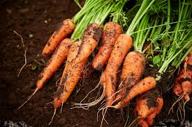
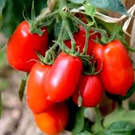
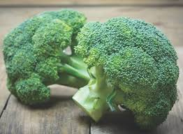
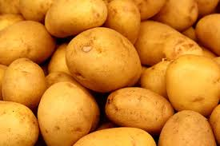

Organic Carrot (Nantes)
Price: ₹50
Quantity: 1 Kg
Description:
Our organic Nantes carrots are sweet, crunchy, and packed with vitamins.
Grown in nutrient-rich soil without synthetic fertilizers, they are perfect for
salads, soups, or as a healthy snack. Enjoy the natural sweetness and vibrant color.
Organic Tomato (Roma)
Price: ₹40
Quantity: 1 Kg
Description:
Juicy and flavorful, our Roma tomatoes are perfect for sauces, salads, and cooking.
Grown organically without pesticides, they offer a rich taste and vibrant color,
making them a staple in any kitchen.


Organic Broccoli (Calabrese)
Price: ₹70
Quantity: 1 Kg
Description:
Packed with nutrients, our organic Calabrese broccoli is a powerhouse of vitamins and minerals.
Grown without harmful chemicals, it retains its natural crunch and flavor, making it ideal for steaming,
stir-frying, or adding to salads.
Organic Spinach (Savoy)
Price: ₹30
Quantity: 1 Kg
Description:
Our organic Savoy spinach is tender, leafy, and rich in iron.
Grown in organic farms, it is free from pesticides and chemicals,
making it a healthy choice for salads, smoothies, or cooking.

Organic Potato (Yukon Gold)
Price: ₹40
Quantity: 1 Kg
Description:
Our Yukon Gold potatoes are creamy, buttery, and perfect for mashing, roasting, or baking.
Grown organically, they are free from synthetic pesticides and fertilizers, ensuring a wholesome
and delicious addition to your meals.